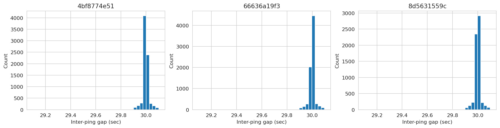
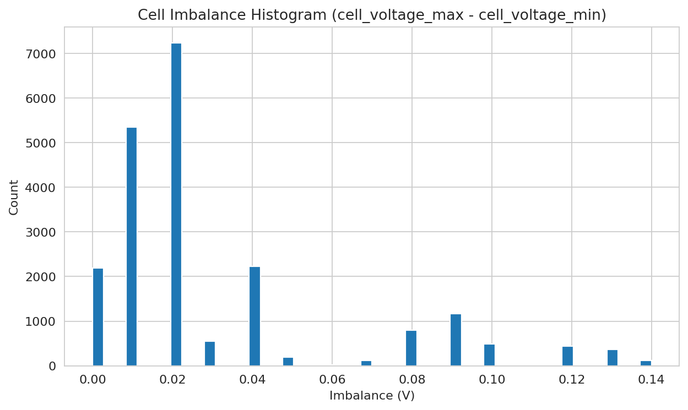

Total records: 21409
Distinct devices: 3
| 0 | |
|---|---|
| device_id | 0.00 |
| imei_token | 0.00 |
| last_ping_time | 0.00 |
| device_status | 0.00 |
| gps_lat | 0.00 |
| gps_lon | 0.00 |
| gps_speed_kmh | 0.00 |
| gps_delta_km | 0.00 |
| gps_total_km | 0.00 |
| battery_state | 0.00 |
| battery_soc_pct | 0.00 |
| battery_capacity_ah | 0.00 |
| battery_usable_ah | 0.00 |
| capacity_discharge_ah | 0.00 |
| capacity_charge_ah | 0.00 |
| battery_voltage_v | 0.00 |
| cell_voltage_min | 0.00 |
| cell_voltage_max | 0.00 |
| battery_temp_c | 0.00 |
| battery_soh_pct | 0.00 |
| ts | 0.00 |
| gap_sec | 0.01 |
| cell_imbalance | 0.00 |
None
Exact duplicate rows (full-row match): 0
Same device + ts within 1s (<=1.0s from previous ping per device): 0
SoC outside [0,100]: 0
SoH outside [0,100]: 0
Cell voltage outside [2.5V,4.2V]: 0

None
